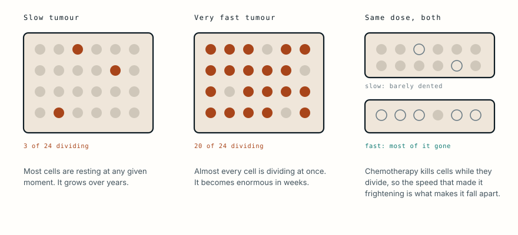

The surgery was free. The treatment that would have cured her was not.
A visiting surgeon removed a tumour that had taken over a child’s midface, at no cost to her family, in a single afternoon. The pathology came back two months later. The operation turned out to have been the right one, and on its own it was never going to save her.
- Specialty
- Paediatric surgery, oncology
- Patient
- A young girl
- Setting
- A visiting surgical mission, August 2015
- Presentation
- A very large tumour of the midface
- Operation
- Examined under anaesthesia, then resected the same day
- Tissue lost
- Nasal skin, cheek skin, part of the upper lip; maxilla left open
- Preserved
- Both eyes, and the lower lip
- Two weeks on
- Alive, wound edges healing, defect left open as planned
- Diagnosis
- Embryonal rhabdomyosarcoma
- Treatment needed
- Chemotherapy and radiotherapy, in addition to surgery
- At two months
- Recovering well from surgery
- Outcome
- Family did not continue; never seen again
- monthsgrowing, untreated
- 1 Augseen on the last day
- same daythe tumour is removed
- 2 monthsthe pathology returns
- thenwhat surgery cannot do
- afternever seen again
Why it was allowed to get that big
The surgeon's own note asks why she had not been treated earlier. It is the right question and the answer is usually not neglect.
In much of the world a mass like this grows through a series of closed doors: no surgeon within reach, no imaging, no pathology service, no money for the journey, and nobody able to say what it is. Families frequently do seek help and are told nothing useful, or are told to come back with money they do not have.
By the time a visiting team arrives, the disease has had months to do what it was always going to do. The delay is a fact about access, not about parents.
The decision he had to make in an afternoon
She arrived on the final day of the trip. The plan was to examine her under anaesthesia and to operate on the next visit, six weeks later.
Under ketamine he judged that resection was feasible, and the team went ahead the same day.
That decision reads as impulsive from a distance and is not. A visiting surgeon knows the arithmetic: a patient who is asked to return in six weeks may not return at all, and a mass of that kind will not wait. Operating that afternoon meant operating with what was in the room, and it also meant it happened.
What was left behind
The resection took the tumour and, necessarily, much of the face around it: the skin of the nose, the skin of the cheek, part of the upper lip, with the maxilla left open and the bulk that supports the cheek gone.
What is left is a through-and-through defect. The hole in the middle of her face does not stop at the surface; it opens directly into the nasal cavity and the mouth, which is the hardest category of facial defect there is. A surface wound needs covering. A defect that communicates with the airway and the mouth needs an inner lining as well, sealed well enough to keep food and air on the correct sides of it, and that lining has to be built before anything can be laid over the top.
Two things did survive that matter more than they look. Both eyes were spared, so the orbits and the optic nerves were outside the field, and the lower lip is intact. A reconstruction that has one working lip to build against is a different problem from one that has none.
That is not an incidental cost. Those structures are the hardest in the body to rebuild. The nose needs lining, a rigid framework and a skin cover. The upper lip has to seal against the lower one, and lips that close are one of the very few things reconstruction cannot manufacture from elsewhere. The maxilla holds the cheek out and the eye up.
The surgeon's own assessment was that reconstruction was possible and would tax his skills. Reading the list of what was missing, that is a fair summary.
What it turned out to be
He returned to Nigeria in September and October and found her recovering well from the operation.
By then the pathology had come back: embryonal rhabdomyosarcoma.
Rhabdomyosarcoma is the commonest soft tissue sarcoma of childhood, and the embryonal subtype is the more favourable of the two main types. It arises from cells that would ordinarily have become skeletal muscle, and the head and neck are among its usual sites.
Which means the differential that mattered at the time resolved in the direction that justified the surgery. The other serious candidate in that part of the world is Burkitt lymphoma, the commonest childhood cancer across the malaria belt, whose classic presentation is a rapidly enlarging mass of the jaw and midface in a young child.

Burkitt has the shortest doubling time of any human tumour, roughly a day, which is why it reaches that size in weeks and also why it responds to chemotherapy the way it does. Masses are described as melting: visibly smaller within days. Had the biopsy come back as Burkitt, the treatment would have been a drug, and her face would not have needed to be taken apart to deliver it.
It did not. The operation was the correct first move.
Why removing it was never going to be enough
Rhabdomyosarcoma is treated as a systemic disease from the moment it is diagnosed, even when every scan says it is confined to one place.
The assumption is that cells have already left. They are too few to see on imaging and too few to find in a biopsy, and they are the reason that surgery alone, however complete, does not cure this tumour. Children treated with an operation and nothing else relapse.
So the treatment is three things together: surgery to remove what can be removed, chemotherapy to deal with what cannot be seen, and radiotherapy to the tumour bed. With all three, and with disease that has not spread far, survival in the favourable groups is around 70% and better in some.
Without the chemotherapy, the number is not a reduced version of that. It approaches zero.
He recorded what she needed: reconstruction, and chemotherapy and radiation for what he called a bad cancer. The operation had bought her the chance to receive them.
What “gave up” means
After discussions with the team, the family did not continue. She was never seen again.
The phrase in the surgeon’s note is that they appeared to give up, and it is worth being careful with it, because abandonment of treatment is one of the largest causes of childhood cancer death in low-income countries and it is very rarely about caring less.
What it usually means in practice is this. The chemotherapy is not local: it means months of repeated travel to a referral centre in a distant city. Someone has to go with her, which means that person stops earning. There are other children at home. The drugs, the scans and the admissions cost money the family does not have, and in many places the treatment is only partly subsidised or not at all. The child, who is currently recovering and looks better than she has in months, will be made visibly sicker by the first cycles before she is made better. And nobody in the family has ever seen a child survive this.
Set against that, stopping is not indifference. It is a calculation made with the information and the money available, and families make it in enormous numbers.
It is also the point at which a free operation stops being enough. Surgery is the part of cancer care that a visiting team can deliver in an afternoon, that fits in a photograph, and that donors will fund. Chemotherapy is months of infrastructure, supply chains, trained staff and follow-up, and it is the part that decides whether a child with rhabdomyosarcoma lives.
What this case teaches
Everything that could be done in an afternoon was done well. A surgeon who happened to be passing removed a childhood sarcoma from a face it had taken over, without charge, and two months later she was recovering. The pathology confirmed that the operation had been the right decision rather than a guess.
And rhabdomyosarcoma is not cured by an operation. It is treated on the assumption that cells have already left the site, which is why chemotherapy and radiotherapy are not additions to the surgery but the part that determines the outcome. Without them the survival figure is not lower. It is close to nothing.
That treatment existed. It was in another city, it ran for months, it cost money, and it would have made her visibly sicker before it made her better. Her family did not follow it, and they are not unusual in that. The operation was the part of her care that a visitor could deliver and a photograph could show. The part that would have decided whether she lived was the part nobody was there to provide.
Written from a first-person account published by the operating surgeon, Brian Camazine, MD, of the Earthwide Surgical Foundation, describing a case seen on a mission trip in August 2015. It is a surgeon's own note rather than a peer-reviewed case report: no imaging, histology or outcome is recorded, and the diagnosis was not known when it was first written. A later note from the same surgeon, following return visits in September and October 2015, recorded the histology as embryonal rhabdomyosarcoma, that chemotherapy and radiotherapy were required, and that the family did not continue treatment. This article was updated to reflect that. Post-operative photographs from the same source, dated a fortnight after surgery, informed the description of the defect and of her early recovery. The behaviour of embryonal rhabdomyosarcoma and of Burkitt lymphoma, the multimodal treatment of childhood sarcoma, and published work on abandonment of paediatric cancer treatment in low-income settings are drawn from standard references. The clinical photograph accompanying that account shows an identifiable child, is held by the foundation, and is not reproduced here. The diagram is original to MedicaseHub and may be reused freely. This article is not medical advice. Read the full disclaimer.
Related cases
- It was never cancer. It still had to come out.Benign and harmless are different words when the skull has no spare room.
- The white pupil in the photographFound early, over 95% survive. Found late, around 40%.
- He was a face transplant candidateJaws rebuilt from a leg, a nose from a forehead, and lips that decided everything.